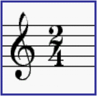
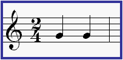
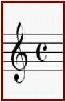
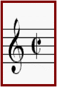
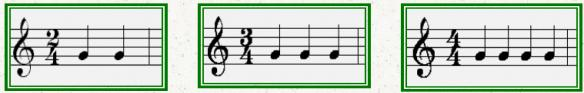
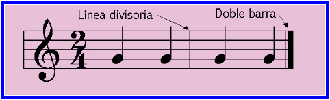

El compás es lo que determina el ritmo y la estructura de una creación musical. Es la división de la obra en partes iguales y permite mantener un ritmo constante. El compás se indica
la principio del pentagrama junto a la clave y se expresan con dos números
colocados uno encima de otro, aunque en clase hemos sustituido a veces el
número de abajo por una figura musical.
El número que va encima (numerador)
indica en cuantas partes o tiempos se divide cada compás. El número o figura
que va abajo (denominador) indica lo que va a durar cada una de las partes
indicada en el numerador. Para el denominador la unidad será la redonda, el 2
corresponde a la blanca, el 4 a la negra, etc.

Ejemplo: arriba 2 y abajo 4: 2 partes y en cada parte la duración de una negra, o sea, es un compás de dos tiempos (lo que duran 2 negras).


Hay compases muy usuales que no se expresan con números: el compás de cuatro por cuatro lo llamamos compasillo es de cuatro tiempos(cuatro negras) y se expresa con la letra C. Cuando veamos esta “C” tachada con una línea, querrá indicarnos que es un compás de cuatro tiempos tiempos dividido en dos partes.

Los compases pueden ser BINARIOS
(de dos tiempos), TERNARIOS (de tres tiempos) o CUATERNARIOS (de cuatro
tiempos). Esto es lo más usual, pero a su vez se pueden subdividir sus partes
quedan compases de subdivisión binaria o ternaria.
Dentro de cada compás
hay partes que son más fuertes y otras más débiles. La primera parte o primer
tiempo siempre es más fuerte que los demás, es como colocar un acento a una
palabra en la primera sílaba:
Si estamos en un compás binario
tendrá un primer tiempo fuerte y un segundo tiempo débil.
Si estamos en un compás ternario
tendremos un primer tiempo fuerte, un segundo tiempo débil y un tercer tiempo
más débil.
Si estamos en un compás
cuaternario tendremos un primer tiempo fuerte, un segundo tiempo débil, un
tercer tiempo fuerte, aunque menos que el primero, y un cuarto tiempo débil,
más débil que el segundo.
Los compases se dividen en el
pentagrama con unas líneas verticales que llamamos líneas divisorias. El
final de la obra (o de algún fragmento) se señala con una doble barra, que
son dos líneas verticales como las líneas divisorias, casi juntas y la segunda
más gruesa que la primera.
